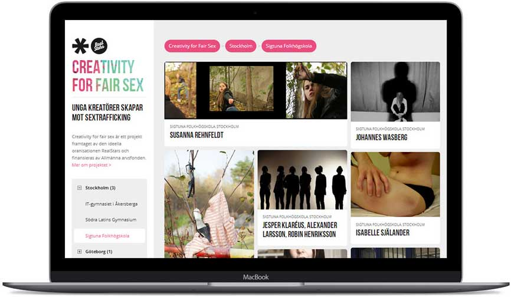

Kantorp-Wegli.in
Creative Director
Web and Concept Design agency Kantorp-Wegl.in was created by myself and Razi Kantorp in 2013. Work we do is anything from Branding, Identity, graphic Design, Illustration, Web Design and Web Development. We have made some non-profit voluntarily work for Realstars against Human Trafficking and Kompisbyrån who works towards integration of emigrants in Sweden.
